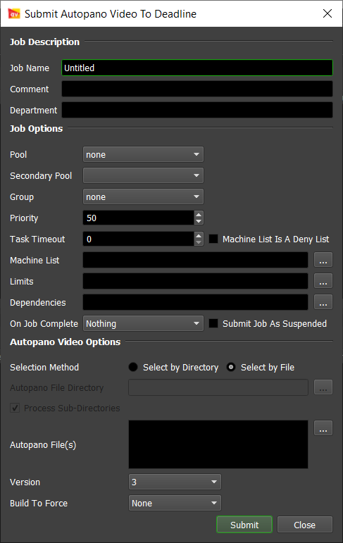
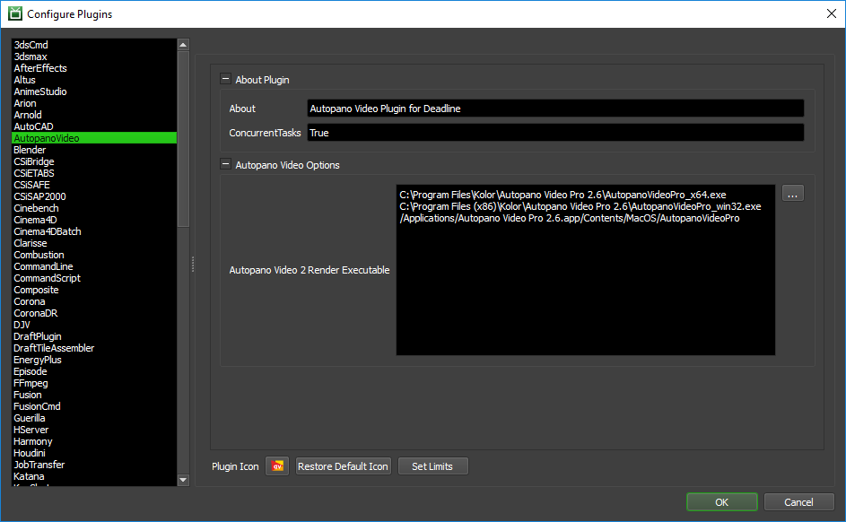

Autopano Video¶
Job Submission¶
You can submit Autopano Video jobs from the Monitor and process them on either Windows or macOS platform.
Submission Options¶
The general Deadline options are explained in the Job Submission documentation.
The Autopano Video specific options are:
Selection Method: Choose the selection method by file or by directory.
- Select by Directory: Choose a root directory to scan for all kava files.
Autopano File Directory: Choose a root directory to scan for all kava files.
Process Sub-Directories: Optionally choose to scan sub-directories as well for kava files.
- Select by File: Choose by individual kava file selection.
Autopano File(s): The file path to the kava file(s) to be rendered.
Version: The version of Autopano Video being used for this render job.
Build To Force: You can force 32 or 64 bit rendering with this option.
Plugin Configuration¶
You can configure the Autopano Video plugin settings from the Monitor. While in power user mode, select Tools -> Configure Plugins and select the AutopanoVideo plugin from the list on the left.
Render Executables
Autopano Video 2 Render Executable: The path to the Autopano Video 2 executable used for rendering. Enter alternative paths on separate lines. Note, during testing, we found the 64bit version of this application to be considerably more stable than the 32bit version on Windows OS.
FAQ¶
What versions of Autopano Video are supported?
Deadline supports version 2.6 and upwards.
Can I submit and process on different platforms?
Yes. We support path mapping of the input *.kava file and all input/output external file path references in the Autopano Video file are stored relative to the *.kava file, so no path mapping of the assets are required within the *.kava file. Ensure you configure Path Mapping in the Repository configuration.
Error Messages and Meanings¶
This is a collection of known Autopano Video error messages and their meanings, as well as possible solutions. We want to keep this list as up to date as possible, so if you run into an error message that isn’t listed here, please visit the Thinkbox Help Centre and let us know.
Currently, no error messages have been reported for this plugin.

{kind=link}
{kind=link}